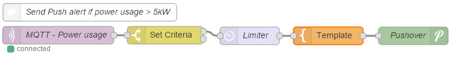

It's been some time since I have had the events module working, it may be "low-write" related it may now be v8.5 related I'm not sure but with heavy development happening in emoncms right now it would be good to concider other modules and try to either fix the issues or retain compatibility, if the interaction needs redefining then should it be addressed from both sides?
on github
Feed update giving error when event is assigned to the feed
Doesn't work with VLow Write EMONCMS V8.5
mcrypt warning after debian upgrade
and on here
Events module test works but not automatically
Is the Event Module compatible with the latest VLow Write Image?
If it isn't compatible with low-write could we make it compatible? or at least confirm it won't work so we all know?
Confirmation either way would be good I wouldn't mind investing time into "getting it working" it if I install it and it should work but currently it doesn't work for me and do not know where to go from there.
Paul
Re: Events module and emoncms compatability
The most common dilemma raised in the forum is whether the member is 'highlighting a bug in the system which needs sorting' or 'I'm a newbie and I'm not sure if I've done something wrong'.
Often it's difficult to separate the two, as highlighted above, and confirmation that a module is not compatible is much easier to accept than thinking that you've done something stupid!
Paul, I think that you will have a lot of support with this - despite the lack of supporting posts!! and if you are prepared to invest your time into resolving this, how specifically can forum members / T&G support you.
Paul
Re: Events module and emoncms compatability
I'm pretty sure this is not something I can fix, If it is supposed to work then I am happy to persevere or if it's broke I'm happy to contribute to locating the cause or maybe fixing it, but if it is no longer compatible either because of the big changes in v8.5/v8.6/v9 or has never accommodated the php feed engines and or low-write/feedwriter then it is probally beyond my php and emoncms know how.
The last time I had it working was with the debian package manager (apt-get) installed versions of emoncms (~v8.3.2?) and the emoncms-event-module package. Currently I would like it but I get by fine without it,
Personally I think all support issues should be based here on the forum and only if and when it is established something needs addressing in the source code should an issue be opened with links to the forum discussion. That keeps the debugging, discussion, advice and guides all on the forum and a concise up to date dialogue of known issues and their status on the repo as a kind of evolving changelog. But there are no clear guidelines on this and no policing/management of issues here or on the repos.
I'm not overly bothered about the events module for my own use right now. but I am frustrated by leaving users hanging when they ask for help and I don't know the answers or even where to look/how to find out and a little concerned that it may fade away from emoncms and not be there if I do need it some day.
If anyone has a fully working events module can you post your emoncms version number and likewise if you know it doesn't work with a particular version because it was working prior to an upgrade or you are familiar with the events module and knowingly chose a version accepting it wouldn't work please share that info. If I/we can establish if it should work in it's current form (as opposed to if we want it to work).
Please do not post about bugs or unsuccessful install attempts in hope of help in this thread, I'm hoping to gather the info required to fix the module and or help other issues in other threads.
If your name happens to be Trystan or Chaverio, perhaps you can shed some light or advise what to look for?? as far as I can fathom, it worked up to v8.4 "full" but but not (fully?) since and cannot confirm if it's low-write compatible.
I would ideally like to get back to emonHub development but that is working at least or help out with the emoncms stuff in progress right now so hopefully this can be fixed without getting in too deep.
Paul
Re: Events module and emoncms compatability
v9 preview | 2015.08.03
Probably an expected post, but the event module doesn't work with this version, installed it tonight, the 'test' function sent a tweet ok, so the Twitter Auth process at least works, but noticed that all of my feeds stopped updating for some reason.
No obvious errors reported in the browser developers console.
Deleting the Modules/event & reboot restored feeds being updated.
Paul
Re: Events module and emoncms compatability
Thanks Paul, I had tried v9 with no joy, your findings at least confirm I'm not doing something daft during install and that the twitter bit still works (on test) and that IS possibly feed related, sorry you broke yours while testing.
Nick (elyobelyob - the original auther ?) has hinted at some recent changes to the global variable $feed could be the cause so I suspect the v8.5> compatibility is severed. and his questioning the (SQL) fed naming might suggest a lack of compatibility with php feeds which are the only ones available in (<v8.5) low-write emoncms.
But this is just uninformed speculation at this point, we need the opinion of a capable developer or enough case examples to prove a pattern hence my appeal for info. I expect the response to be slow (if any) as no users with a working event module will find this in a search and less active users with a working set up may not visit often.
But at least now as users pop up with issues I/we can point to this thread and say we are aware rather than just leaving them hanging.
Paul
EDIT - Just seen this new thread too Error logging to feed with the same "stopped updating" symtoms.
Re: Events module and emoncms compatability
Yes, I was the original author. Unfortunately, if the project is going to branch off in all different directions and the developer/s for these changes don't keep in mind other modules and their dependencies, then those modules will die a death. TBH, I really wanted the event module to become a core module and therefore be included in all .
Unfortunately, we're not getting much response from Trystan in these threads and I'm not going to be able to spend the time rewriting the entire module. So, unfortunately, from my perspective, this module is no longer supported.
It was certainly useful from my perspective after I spent my Christmas holidays writing it a few years back. It doesn't work for me now and I have had to disable my events to keep the project running. All in all a bit of a shame, but seeing the amount of branches v number of developers, it was of no surprise to me.
Personally, if we had based the project around an MQTT feed, it would have made life a lot easier and the event module wouldn't have been as hacky as it is. Using a HTTP API is an awful overhead.
Sorry all.
Re: Events module and emoncms compatability
@ Nick - I share your frustration, but the splitting out into multiple versions started way back with the low-write version which as far as I know (and keep mentioning without attracting any confirmation) wasn't ever compatible, the events module was still used with the main version until a few months back, as you know the MQTTwarn stuff was added by sumnerboy and nubble. The recent explosion of branches will hopefully be reined in soon as there is alot of effort being put into v9 which will hopefully replace most of the current branches.
If there has been a recent change (which I suspect there has) that has severed the link I'm fairly sure it wasn't known about and I'm hopeful that it will be restored, no-one is suggesting it needs rewriting, we have only just confirmed there is an issue.
MQTT is playing a part in emoncms's future of that we are pretty certain, but the http api will alway be part of it's history and must continue to be included not only for backward compatibility, but also as not all users can or will make the jump to MQTT and forcing a choice will only divide emoncms again.
Paul
Re: Events module and emoncms compatability
MQTT is playing a part in emoncms's future of that we are pretty certain, but the http api will alway be part of it's history and must continue to be included not only for backward compatibility, but also as not all users can or will make the jump to MQTT and forcing a choice will only divide emoncms again.
I don't think Nick was suggesting that emoncms should remove the http api, but that MQTT is the desired medium to interpret data for the 'event module'.
Paul
Re: Events module and emoncms compatability
Maybe it is, maybe there needs to be a discussion and the various parties decide a common path perhaps.
Re: Events module and emoncms compatability
The entire event module could be distilled down to a single *MQTT target* IMO - once you have MQTT pubs being generated you can decouple all your email/twitter/pushover targets from EmonCMS entirely (and implement via something like NodeRed or mqttwarn). Much cleaner solution, and no need for all this target-specific coding in EmonCMS (i.e. twitter libraries etc).
Agree however that this puts a burden on the user to run their own MQTT broker. I get the impression however that anyone running EmonCMS locally will have the *know-how* to do this?
Re: Events module and emoncms compatability
Ben, yes agreed, this is the route that I would prefer.
Currently, I'm using node-red with the http api to obtain data, but would much prefer MQTT..
I was hoping that MQTT would have been a standard feature in emoncms by now.
Paul
Re: Events module and emoncms compatability
So are we saying the events module should just be totally independent of emoncms ? or done away with entirely even?
Currently, I'm using node-red with the http api to obtain data, but would much prefer MQTT..
Why are you not using the publish to MQTT process?
We shouldn't allow MQTT implementation and the events module to become confused, I thought the comments where about using MQTT to (internally?) link emoncms to the events module (not sure I agree though) and not about using the events module to get MQTT or using MQTT to make the events module redundant in favor of node-red etc.
Putting aside MQTT for a moment, Since emoncms should have it regardless of the event module and thats a differnt discussion.
As far as I recall the events module worked well prior to the low-write version and then v8.5. The "drop it in the Modules folder and update&check" was simple and the "apt-get install emoncms-module-event" was even better. I really do not think forcing users to set up a MQTT broker etc etc just to get an email if things go wrong is a good path, a few users struggle to just get emoncms installed (that's not their fault, it's not made easy for them)
With the current "extra processes" available in XT or v9 should "events" be triggered from the processing?
There are alot of enthusiasts on here and MQTT should definitely be provided to integrate everything you want but some users just want a full featured energy monitor without becoming fully fledged home automation geeks like us :-)
Paul
Re: Events module and emoncms compatability
So are we saying the events module should just be totally independent of emoncms ? or done away with entirely even?
Yes, totally independent. Emoncms can't be 'all things to all men', where do we draw the line? there has to be a cut off point in all software, what are emoncms's core functions, and what are conduits to other functionality?
Why are you not using the publish to MQTT process?
Is this working? last I heard was that it wasn't complete and needed further work. Where is this documented in Building Blocks, OEM Blog or git?
We shouldn't allow MQTT implementation and the events module to become confused, I thought the comments where about using MQTT to (internally?) link emoncms to the events module (not sure I agree though) and not about using the events module to get MQTT or using MQTT to make the events module redundant in favor of node-red etc.
No confusion, Ben was talking about the [internal] use of MQTT linking to the events module, whilst I was talking about the ethos of using MQTT as a common communication medium, which could be used if users had a use... both internally and user facing.
Paul
Re: Events module and emoncms compatability
IMO letting me know my energy monitor is not monitoring energy or that I am consuming too much are more in line with the role of an energy monitor than say controlling my central heating, (for example), Agreed there should be a line but if and when it is defined it does not need to be rigid and non-negotiable.
I want to be clear (again) that I'm not against MQTT, far from it I would like to encourage it's use. I just don't see the desire for MQTT as a valid argument against the current events module, can't we have both even?, so that isn't really the discussion here. Is the events module (or at least it's features) desirable and worth keeping? would it take much to fix, update or integrate it? The decisions about the event module features should be based on these points and IF there was a working alternative that could be considered too.
How would you propose to create "events" on MQTT? are you going to publish every feed you want to potentially trigger an event so that another SW can do the "event" or are you thinking emoncms should do the trigger and that trigger is published? Surely the latter IS the events module's current role and the event is triggering MQTT?
As far as I'm aware the MQTT process works fine, Publish to MQTT - how do you set it up? [Solved], the phpMQTT module needs updating (but should really be a dependency rather than in the repo) currently the broker details are hardcoded but could be moved to the settings as the mySQL and redis server details are already defined there. I don't think it is documented but that's not uncommon is it?
Paul
Re: Events module and emoncms compatability
Throwing popcorn from the peanut gallery: I represent the "some users" group:
There are alot of enthusiasts on here and MQTT should definitely be provided to integrate everything you want but some users just want a full featured energy monitor without becoming fully fledged home automation geeks like us :-)
I've got 10 units out in the field, and every one uses the Event module to send Prowl, e-mail, and URL notifications. Seems like essential functionality to a basic user like me.
Re: Events module and emoncms compatability
Would you mind telling us what systems are you running JD? ie what vintage? which emoncms version? what platform/OS/hardware ?
Just to help get a handle on what works and what doesn't, to hopefully hone in what when wrong when.
Paul
Re: Events module and emoncms compatability
I agree with JD, I believe the events module should be core. It's one thing receiving and displaying readings - having an action on these results is a logical step. Which is why I built it in the first place.
It's apparent that the modules are secondary to the core OEM code. The core code is taking new direction, without any consideration for dependencies. It seems there are a lot of threads r.e. the broken event module and some people will have a reliance on its functionalities.
So, without some feedback from OEM themselves, there seems little point investing any more time in a short term fix. A definitive direction is required.
Re: Events module and emoncms compatability
Systems: 10 EmonTX V3 in the field at various sites, and some other Arduino-based things sending data
Platform: Running EmonCMS v8.4 (8.3.5 with the last pre-8.5 changes) on a Linux VPS
Problems: None with the Event module! It works great. Simple enough that users can add their own events, once I've set up the feeds etc for them.
However, my users complain about the dashboards on their mobile devices, and I've been eagerly following 8.5+ developments awaiting responsive design for mobile. But if I have to chose between "responsive" and "Event module", I must stay with "Event module".
Some dashboards:
http://data.peakmonitor.com/proto5
http://data.peakmonitor.com/proto2&id=14
http://data.peakmonitor.com/proto3
Re: Events module and emoncms compatability
Paul: My post hit moderation and will appear eventually!
To add to the conversation: emonCMS can be used for so much more than home energy monitoring. For example, I'm monitoring a water well pump with an EmonTX. This well has a problem with contaminants jamming a check valve, and if jammed the pump will run more than normal. A notification is sent to the well maintenance guy via e-mail when the pump runs too much, triggering the repair and saving energy (and wear and tear on an expensive 3-phase well pump).
Re: Events module and emoncms compatability
"I believe the events module should be core" quite possibly, I previously questioned the possible use of the new conditional processes, As for being a "core module" I'm not sure a mandatory install is going to fly with emoncms.org, so it would need to at least be user enabled/disabled to appeal too T&G.
v8.52xt/v8.6/v9 is currently only a experimental branch Trystan has shown interest but there has been no indication if Chaveiro's version will be fully adopted yet, certainly the more it offers, the more compatible it is and the fewer barriers it create the more likely it's success will be, which adds fuel to this discussion. I would like to see emoncms move forward as a single version that can be configured rather than multiple versions and right now we need to keep a pre-v8.5 'full' version just for users that want the events module like JD.
"The core code is taking new direction, without any consideration for dependencies." I'm still hopeful that's not the case, I think Chaveiro needs to be involved in the discussion, he may not be aware of the repercussions of the changes made and may have a solution. Do we know for sure it's not just a minor thing?
Paul
Re: Events module and emoncms compatability
I pretty much fixed as per a different thread, it was due to the changes in the database structure - which the events module enquires against directly. However, it went a bit mad and started sending me repeated messages. I stopped looking at it then. I just don't have the time at the moment and still can't see any point in fixing in the short term when so much is going on with the core.
Re: Events module and emoncms compatability
Are you referring to this discussion in the events module issues on github? Can you expand or provide some links? I do not recognize the code is it in emoncms or the events module?
I recall someone else experienced "rapid fire" messages so maybe that's not directly related?
I'm willing to TRY and fix it, or at least dig a bit deeper my php is almost useless, if the recent break is easy to fix NOW when Chaverio is trying to bring the full and low-write versions together is the ideal time to bring this up as it needs to be made compatible with the low-write stuff too. it because there is so much going on that I brought it up.
Paul
Re: Events module and emoncms compatability
I just don't see the desire for MQTT as a valid argument against the current events module, can't we have both even?
I'm not opposed to having an events module (I've shown my support in previous posts above), but it is clearly not being supported by OEM otherwise they would have kept it up to date & working. But there is definitely a place for both, and with all the work being done with v9 hopefully it may find it's way back?
How would you propose to create "events" on MQTT?
Publish the feed which I want to monitor, and then I would have a much wider range of options to process the feed, and wider source of outputs. For example, if the feed is greater than x, less than x, stays higher than x for x minutes, is higher or lower than a different feed, is greater than x between 7pm and 7am, feed stops updating, etc, etc. Also set up alerts to a much greater variety of options - pushbullet, pushover, boxcar, etc.
As far as I'm aware the MQTT process works fine,
Yes I did see & contributed to that thread, but there seems to be an issue with resilience - keeping it running especially restarting after a reboot, but I'll give it a try.
Paul
Re: Events module and emoncms compatability
Yes, that's the discussion. The code is in event_model.php.
I got past the database structure change issue, the "rapid fire" was the next issue, where I decided I couldn't investigate the core code to work out why.
Re: Events module and emoncms compatability
The "issue with resilience" was with the mqtt_input.php scrript required to subsribe not for the "publish to mqtt" processor. With the latest phpMQTT from bluerhino to fix a known issue the problems were due to multiple mqtt brokers (which I've seen before with multiple emonPi's) ie subscribing to one and publishing too the other and the 2 instances of broker details hardcoded into the emoncms code.
I just looked to get the correct location to define the broker and found Chaveiro has already moved the mqtt broker details out to the settings in v9 so you should just need update phpMQTT and enable mqtt (set the ip?)
Paul
Re: Events module and emoncms compatability
Thanks Paul, I'll give it a try when I get chance (babysitting!!) and continue this in the v9 development thread if there are any issues.
Paul
Re: Events module and emoncms compatability
Hi
Just to report that emoncms and mqtt has been more or less rock solid since I started the post about setting up mqtt. The only issue I had was with the Pi dropping wifi. In the end I used a cable to the router and I have had no problems since. I now have node red generating events from emoncms and even shutting my servers down if voltage is getting low.(I run on a solar battery system and a low voltage dropout is triggered to protect the battery. Node red shuts down the servers when I approach drop out voltage)
Regards
Ian
Re: Events module and emoncms compatability
Throwing popcorn from the peanut gallery: I represent the "some users" group:
There are alot of enthusiasts on here and MQTT should definitely be provided to integrate everything you want but some users just want a full featured energy monitor without becoming fully fledged home automation geeks like us :-)
FWIW, I'm part of that same group. Just wanna monitor home energy use and PV production.
Re: Events module and emoncms compatability
From the "some users" group:
I'm running emoncms 8.4.0. I recently installed the events module. I have a feed that is either 0 or 1. In the case this feed is 0 I want to set another feed to 0 (i.e. reset a kwd feed to 0).
So I have an event like so:
if feed1 == 0 set feed2 to 0
It works perfectly if I use the test button on the events page but it doesn't work by itself.
For myself having the events module working would be extremely useful.
Re: Events module and emoncms compatability
@JD - Thanks for info and links, I had over looked the end-user case for simplicity and integration of events module, that would apply to both independent single site emoncms installs and to a central server setup for multiple locations like emoncms.org, I suspect you are using the latter? Can you tellus what feed types you are using with the events module? I believe there was a compatabilty issue with the "low-write" version way before the "full" versions and would like to establish if that is because of the php feed types or just a "low-write" version thing.
I'm really hopeful about future emoncms "variants" being different "modes" of the same version so all features and fixes are readily available to all users and compatibility is maintained across the board, you should not have to choose between the events module and improved dashboards.
@Ian - Thanks for letting us know.
@Bill - I think many, possibly even most? users actually fall into that category, even though I love playing with this stuff, I want a 'live' system that just works with a few moving parts as possible, simple, flexible and reliable to use. Plus I'm not the only one in the house and if I don't make it easy I'm just giving other a reason to not use it.
@Iain - I would of liked to of helped you further on your Events module test works but not automatically but I can only guess as there is very little info available and I do not have a working instance of the events module. Can you confirm what type of feeds are you using? have you have had any working events (triggered by feeds not on test)? Have you tried any other event/feed combinations? the info would be very useful and if I can help you further I will do so on your thread.
Paul
Re: Events module and emoncms compatability
@pb66: I am trying to make a business of custom monitoring solutions, and I'm running my own copy of of emonCMS instead of using emoncms.org's bandwidth (and I need the Event module, which is not available on emoncms.org).
Feeds are almost exclusively PHPFIWA, with a few PHPTIMESERIES.
@hendersonian: I have never had success with the "set feed" feature. It could be that I just don't understand it (likely) but I have stopped trying to use it.
Screenshot of one of my user's events page:
Re: Events module and emoncms compatability
@JD - sorry not very well worded :-) I guessed your own server, by the url and use of events module, I meant as opposed to a server at each site, Fantastic news about the phpfiwa and phptimeseries feeds, interesting about the set feed as I have been using that whilst doing some tests on v9, guess I shall have to start again if that doesn't work on a "working system" doh!!
Good luck with your venture,
Paul
Re: Events module and emoncms compatability
On the "Event module: I do not receive any email alert" it is pointed out byJD that the 2 "event module" code blocks are not included in the low-write version and that adding them manually does make the event module work with the low-write version. Those 2 same blocks are present in each through to v9 except the low-write versions which are still missing in the latest (v8.5 low-write). I would be good to try adding those to a current low-write install to see if it works, I suspect not as the v8.5 'full' doesn't work, I cannot find a "v8.4 low-write" in in github so if anyone has the older "pre-emonPi" SDcard image version running and fancies adding those blocks and adding events module I would be keen to hear the outcome.
So to recap, no v8.5> versions work, Since JD is successfully using v8.4 can we assume it broke during the reign of v8.4 (124 changed files with 8,193 additions and 1,681 deletions between 1/9/14 and 29/4/15) this could be why Iain's install doesn't work despite being v8.4 perhaps JD's is an earlier v8.4 ?
I have tried to "git checkout 994e4fee6a19a56df8fe35fbc0a757071ee644ac" (restore to the first v8.4 commit) from v9 but there are all sorts of issues (even after rewriting the settings.php) probably v9 is too different???
@ Iain - If you want to try the version above, you may have more joy than I did, you will probably need to at least redo settings.php, restart apache2 and check&update. but a negative result may not confirm anything as I didn't succeed with v9.
Paul
Re: Events module and emoncms compatability
@PB66: Thanks. All my feeds are PHPFINA and I cannot get any type of event to trigger is it should but test always works. My emoncms version is 8.4.0.
I can't try your suggestion above for a couple of weeks as not at home at the moment - I will try when I get back.
Re: Events module and emoncms compatability
@All: I went through my documentation, and it looks like I installed Emoncms 8.3.5 in November 2014, and then added one fix late December (to fix the year end Zoom visualization bug, fix authored by chaveiro on Dec 18, 2014) which brought me to 8.4.0 I did not update after that. So the version I'm running is 99% 8.3.5.
I have had a sudden burst of fear as I looked at Github and realized that there is no way to install 8.3.5 anymore - 8.4.0 with non-working Event module (per hendersoniain) is the oldest version available via git.
Am I building a business around a dead module/version?
Re: Events module and emoncms compatability
Thanks for letting us know, we are getting a timeline now.
v8.3.5 in Nov '14 ? didyou mean v8.3.6 ?
With github you can restore to any point by finding the point in time (commit) and getting the long id number as shown above for the v3.6 to v8.4 change point.
There are also some "tagged" versions of which both v8.3.6 and v8.4 are present (not all versions are) you will need to look at the commits for each tagged version to be sure of what you are getting, ideally a version should be a definitive snapshot at a specific point in time, but that's not the case here, you can use tagged version numbers with git checkout too.
If you have a working system the way you like it you could just copy the emoncms folder, delete the settings.php and ZIP it, use that rather than downloading or cloning from git for new installs until the events module and versions are sorted. (In fact if you could share it that might help Iain out and I can install it to do some tests too)
Paul
Re: Events module and emoncms compatability
@pb66: Thanks for that info! I have learned some more about git.
Here is a link to a zipped version of my working emoncms folder, minus settings.php.
http://bit.ly/1IQvJrt
I noticed that most of the files on my server are dated "Oct 17, 2014":
Re: Events module and emoncms compatability
Not being at home I can't check my pi for file dates. However, on my laptop I downloaded an image for emoncms on 28/01/15 titled emonSD-13-08-14.img. I will have used this image and then installed the updates available at that time (or a few days later).
Re: Events module and emoncms compatability
@JD - I'm not able to download/open your zip, do you you have dropbox or google drive?
@Iain - Any SDcard image will have had a "low-write" version of emoncms, your other thread said v8.4.0 did you mean 'v8.4.0 low-write' ? what does each webpage say at the foot?
A comment on the v9 preview thread has reminded me there were some changes to how the time is handled in ~v8.5 emoncms, previously in human readable form and then in unix time format, is it possible the events module is not seeing the time in an expected format?
Paul
Re: Events module and emoncms compatability
Downloads/unpacks OK for me, so I've emailed you it Paul.
Paul
Re: Events module and emoncms compatability
@PB66: As not at home I cannot remember what it says at the bottom of the webpage - sorry. Definitely 8.4.0 is given as the version number though.
Re: Events module and emoncms compatability
@ Iain - No problem, We can confirm later. all variants will have the version number but "low-write" or "extended" will be shown too in those cases. Both Chaveiro and Trystan are currently away too so there is unlikely to be much progress right now.
@ Paul - Thanks for doing that,
Paul
Re: Events module and emoncms compatability
Had the same problem, switched to (master branch), prowl working ok
https://github.com/emoncms/emoncms/blob/low-write/docs/switchtofull.md
just need to flush out the old prowl messages
Re: Events module and emoncms compatability
I've just read this topic. Can only support v9 if module craches, fixes should be compatible with lower versions. Don't have time to code events module tough.
What is the problem with the module on v9 anyway ?
I've installed it and top of v9 and after db update it does not crash, didn't test functionality but that is entirely dependent on module code not emoncms code.
Fast reading the code, the events module is pretty much isolated from the rest of emoncms, apart from:
- increases by and decreases by type only works on mysql feeds and crashes on other feed engines.
- set feed action requires redis.
A personal opinion, this module tries to bring IoT to emoncms as a module. This is a dificult task and maintaining it as a module will be limited to few supported targets.
There are some open source projects just for that: receive an input, optional act on its value, and do some action.
Acting on feed values is already possible with input processor conditional engines (available since 8.5.0 XT) as its also possible to trigger mqtt messages on feed conditions.
Paul Reed already gave a clue on what he's using: Node-RED. I think its a good open project that can receive input from mqtt and should be explored. A quick google find gave https://dweet.io/ but this is hosted by some one and no source code is available.
So configuring inputs with conditional processors + send to mqtt + node-Red is a good alternative.
For future i see using conditional processors + modular processes that one can easy build to give easy support to solutions like dweet.
Re: Events module and emoncms compatability
I have watched hours of youtube video on MQTT and Node Red. Looks super cool for developers, and much more powerful than the Event module, but not anything that an end-user could use. I still don't fully understand it myself.
With the Event module, my 75 year old dad can log in and add an event to e-mail when his generator has started... not sure how to duplicate this simplicity any other way.
You guys are far more advanced than I am however, I"m open to suggestions.
Re: Events module and emoncms compatability
Node-red is pretty much a blank canvas which you can drag and drop 'functions' (the correct name is 'nodes') into, and join them together to create things.
So by example, I've dropped a MQTT node below (to listen for feed data from emoncms), dropped a 'Set Criteria' node next to it (which filters out readings below 5kW), dropped a 'Limiter' node (to stop multiple alerts being sent), dropped a 'Template' node (which turns the feed reading into a friendly sentence - such as "Hey, you're using too much power - currently 6202W") and finally a 'Pushover' node (which 'pushes' that sentence to my phone).
But the last node could be any one of a range of outputs - it could be a tweet, an email, pushbullet, pushover ect. there's new nodes being added all of the time.

The whole purpose of node-red is to allow people who cannot write code to use their imaginations and develop whatever they want by dragging & dropping nodes. I fall into that category, and yet I've found node-red fairly easy to use.
Another advantage is that when someone creates something really useful, they generally share what they've done, and you can simply import their work into your node-red and start using it.
http://nodered.org/ - main node-red website
https://groups.google.com/forum/#!forum/node-red - node-red forum (usually technical stuff)
Paul
Re: Events module and emoncms compatability
Took NR for a quick spin this afternoon. Gives new meaning to the expression "connect-the-dots"
Gotta give this puppy a closer look!. Thanks for the example, Paul.
Re: Events module and emoncms compatability
Coming back to events module:
My actual version is: v8.4.0, bufferedwrite:0.0.2 according to the webpage.
I have redis service running OK also.
Re: Events module and emoncms compatability
Hi,
I also think that the events module should be core.
Node-red is nice but not usable for end user.
Eric
Re: Events module and emoncms compatability
We already have provision for emailing within emoncms and the ability to "publish to mqtt" so it would not take much to add email or mqtt,"event notification" process(es) with args for topic/email address, message(inc val), repetition interval(snooze before re-notification). This would make good use of the conditional processors.
@ Iain - that is a low-write version, only the full versions had the "event module code" needed for the event module to work, the code can be added but I don't think that is the whole solution, you will need to back date to pre v8.4 as well.
Paul
Re: Events module and emoncms compatability
OK. Would that be just a case of downloading an image and starting again on my Pi?
Re: Events module and emoncms compatability
Unfortunately not Iain, you have 2 bridges to cross. The first is that low-write variants (required for Pi SDcard) do not have the 2 events module code blocks. See JD's fix in Event module: I do not receive any email alert. You can add the blocks to a low-write emoncms, or switch to a "full" emoncms not on a SDcard (or SSD, USB stick etc). The second is that you need a compatible version of emoncms either by backdating to a version around v8.3.6 or early v8.4.0, (that may not have other features or fixes) or by fixing the current version(s) and make them compatible. But we have not yet established the cause of the break.
Since those that could won't, and those that would can't, it looks unlikely the events module will make a come back. That is fine in this instance, if a replacement is implemented in the core as suggested above. But pretty poor if the only option is to over complicate things with a mandatory installation of, and crash course in, mqtt, node red and/or something else just to get an email out of emoncms, based on a feed value when it can already email you a password reset.
Either way, it doesn't promote the development or use of optional modules when they are effectively unsupported, which affects the overall appeal of emoncms itself. Very poor show !!! (IMO)
Paul
Re: Events module and emoncms compatability
Paul, just to add, the *optional modules are also completely open source. Well, events module is.
Re: Events module and emoncms compatability
@elyobelyob: If I had the ability, I would update the events module as it's central to what I'm doing! But it takes me hours to make simple changes to things. I am amazed at how fast others like chaveiro make huge changes to the code. Maybe someone with that skillset will take on the task, but until then I will stay on 8.4.0.
Re: Events module and emoncms compatability
Yes my coding skills (or more correctly lack of) are not up to updating the events module. However, reading through PB66's post with reference to:
I added the two blocks as suggested and my events module seems to be working as required now - that is my requirements of setting a feed value back to zero depending on another feed value is working for me now. I am happy with that for now so thank you PB66 for pointing me in the correct direction.
Re: Events module and emoncms compatability
I'm glad you have it working now, this is a significant point as it means there isn't a change that broke the event module during v8.4, the "later v8.4 not working" has been a bit of a red herring. The fact that it is a late "low-write" v8.4 and adding the code blocks resolves the issue confirms the original assumptions.
The "low-write" versions of emoncms weren't "event module ready" as the 2 code blocks are missing and there was no problem until the v8.5 changes were implemented..
Paul
Re: Events module and emoncms compatability
Yes it's good it's working and it at least means it works up to my version with the missing code blocks. In my case it probably comes back to an early commentt of yours in this thread - am I doing something wrong or is it really a bug - that's the problem with having limited knowledge. But your help is much appreciated.
Re: Events module and emoncms compatability
Hello friends
I got here because I find that the events module emoncms no longer works and is a great pity
I commented that I tested with several different Linux PC
1) ubuntu 12.04 with 8.3 emoncms and events work.
2) ubuntu 14.04 with emoncms 9RC2 not working. I get the message: "Notice: Undefined index: order in /var/www/html/emoncms/Theme/basic/menu_view.php on line97"
3) ubuntu 14.04 with emoncms 9RC2 testing events and send messages but when trying to feed a receipt input "Fatal error: Call to a member function get () on a non-object in / var / www / html / emoncms / Modules / event / event_model.php on line 238 "
4) Rasperry pi2 with emoncms downloaded image available and events work. In this case every time you add a new input is necessary to remove the module and add events to fly to work.
I am not an expert in emoncms, if a user interested. The module events is vital for many of us. Or is there another way to get emoncms advise us if something is wrong? Maybe I'm missing something
I follow the thread with interest to see if they know they find a solution.
I ask no way to dispose of emoncms 8.3.5 to install and so have the events?
Where I can get the old versions of emoncms?
Greetings to all